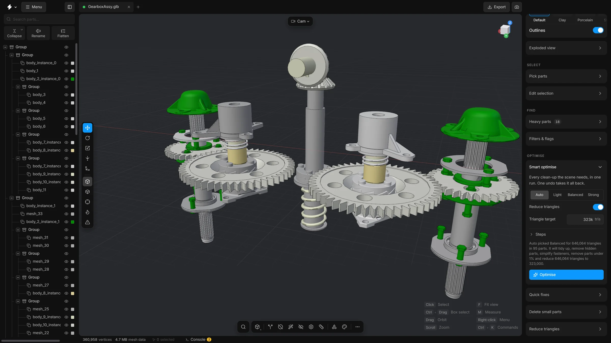

Smart optimise
One card, one button: every clean-up the app has, run one after another on the whole scene. Choose how far to go, read the plan, press Optimise.
The other tools in this group each do one job. Smart optimise runs them for you, one after another, on the whole scene. Use it when you want a lighter model and do not want to choose the order yourself.


It is lossy: it removes parts and triangles. The whole run is one undo step, so one CtrlZ takes everything back.
Steps
- Open a model.
- Open the card Smart optimise in the right sidebar, at the top of Reduce.
- Choose how far to go: Auto, Light, Balanced or Strong. Auto is the default.
- Look at Triangle target. Type another number if you need one, for example
300kor1.5m. - Read the line under the controls. It spells out what the run will do, in order. With Auto it also says which level was chosen, for example “Auto picked Balanced for 1,103,373 triangles in 43 parts”.
- Press Optimise.
- When it is done, a message gives the triangles before and after and how many parts were removed.
- Look at the model. If it lost too much, press CtrlZ once and try a lighter level.
You can also run it from the search: press CtrlK and type Smart optimise. It runs with whatever the card is set to.
The levels
A level is a starting point. It sets the switches under Steps and the triangle target.
- Auto
- Chooses from how heavy the scene is: under 200,000 triangles it uses Light, under 2 million it uses Balanced, and above that Strong. The line under the controls says what it chose.
- Light
- Only tidies. It removes empty parts, parts whose triangles have no area, and empty groups. No triangles are reduced.
- Balanced
- Also removes parts hidden inside the model, turns bolts, nuts and washers into plain cylinders, removes parts smaller than 1% of the model, and reduces the scene to half its triangles.
- Strong
- Like Balanced, but it removes parts smaller than 2%, also closes holes in flat faces, and reduces the scene to a quarter of its triangles.
The steps
Open Steps in the card to see each switch. If you change one, no level is lit any more: the settings are yours. Each step is the same tool you could run by hand.
- Remove empty and broken parts
- Parts with no triangles, parts whose triangles have no area, and groups with nothing left in them. See Quick fixes and tidying up.
- Remove parts hidden inside
- Parts that cannot be seen from outside, from any direction. See Select hidden parts.
- Bolts, nuts, washers
- Found by their shape, up to a thread of M30, as in Fasteners. Keep leaves them alone. Simplify turns each into a plain cylinder. Delete removes them.
- Remove parts under
- Parts whose box, measured from corner to corner, is shorter than this share of the whole model. 0 leaves small parts alone. See Delete small parts.
- Remove holes
- Closes holes in flat faces, with the settings and the size limit of the Remove holes panel. See Remove holes.
- Reduce triangles
- A switch of its own. On: the densest meshes are reduced until the whole scene has the number of triangles in Triangle target, as in Fit to budget. Off: the run only removes and tidies, and every mesh that stays keeps all its triangles. If the target is not lower than the scene has now, nothing is reduced.
- Triangle target
- How many triangles the whole scene may have after the run. You can write
150000,150kor1.5m. Choosing a level sets it from the scene you have now. A number you type is kept.
The steps always run in this order: tidy up, hidden parts, fasteners, small parts, holes, then the reduction. Removing comes before reducing on purpose, so no effort goes into thinning a part that is deleted a moment later.
While it runs
A progress card names the step that is running. Cancel stops the run before the next step and keeps what has already been done. Each step writes a line to the Console (the button at the bottom of the window), and one summary is shown at the end.
Undo
The whole run is one undo step. CtrlZ takes all of it back, and redo does all of it again.